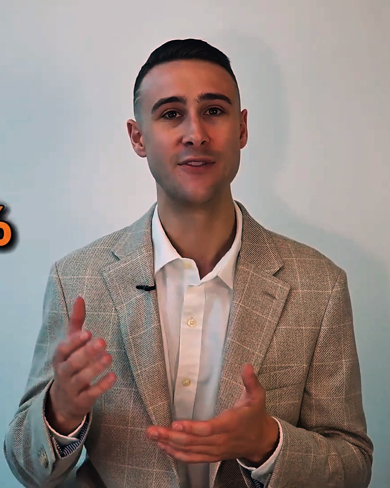

Conquer the Mind
Most franchise podcasts are sales pitches. This one is homework.
Forty-three conversations with people who have signed a franchise agreement, built a brand, or sold one. Free, unfiltered, and every episode plays right here.
Start here · Episode 36
Meet Doc Cohen: First Franchisee Hall of Famer
The first franchisee of Great American Cookies, its most successful owner from day one, and a former IFA chairman.
Where to start
Watch these five before you sign anything.
Five conversations, in the order I would watch them if I were buying today. Each one plays in the player above.
Every episode
All 43, newest first.
No episode matches that. Try a guest name, a brand, or a word from a title.
The host
Raised in franchising. Asking the questions a buyer should.
I grew up inside a franchise family: independent restaurants first, then multi-unit franchisees, then the franchisor side, scaling a dry-cleaning brand from around ten locations to more than 2,400 worldwide. The show is the conversation I wish someone had offered me before my first discovery call.
Every guest has signed a franchise agreement, built a brand, or sold one. No pitches, no sponsors, and nothing you have to buy at the end.
About Josh
The call
Heard enough to have questions? Ask me directly.
One free conversation. We map your fit, name the categories worth your attention, and I tell you straight if this is your move.
Twenty minutes. Free. No obligation. Or call (786) 789-0744.